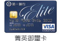
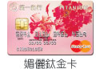
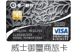
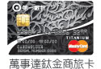

如何開卡？
您可選下列任一方式完成開卡程序
電話號碼為6碼請撥41-1111或41-6666
如何申請信用卡？到期了還要申請嗎？
- 年滿20歲以上，有正當職業固定收入者可申請正卡；年滿15歲，且為正卡人之父母、配偶、配偶父母、兄弟姊妹、子女可申請附卡。
-
年收入15萬元以上可申請普卡、JCB悠遊聯名卡與i-Fun聯名卡；
年收入20萬元以上可申請白金卡、白金商旅卡、御璽、鈦金、晶緻卡；
年收入60萬元以上可申請御璽商旅卡、鈦金商旅卡。 -
必備文件：
- 正附卡申請人身分證正反面影印本。
- 外籍人士請附居留證及護照影本。
-
財力證明文件：
- 所得稅扣繳憑單；勞保卡、薪資單、最近三個月薪資轉帳存摺影本；
- 其他財力證明(定存存單，近三個月活儲影本，近一期房屋/地價稅單)
一般而言，只要您在持卡期間消費繳款正常，在信用卡到期前，本行均會主動於到期當月月初開始製發並寄出新卡給您續用，並不需要以電話通知或到本行辦理任何續卡手續。
您所持有的過期舊卡不需交回本行，但是必須注意不可讓卡號或相關資料外流，以免被第三者盜用您的資料，造成不必要的困擾。因此，最好將過期舊卡自行剪斷銷毀，尤其「卡號」和「有效期間」應特別注意加以破壞，以保障您的權益。
若您不再續用原持有之信用卡，您可在信用卡有效期間屆滿前，事先通知本行終止續發新卡，或於接獲續發新卡後七日內通知本行 ，並將收到之新卡剪斷寄回本行，無須說明理由及負擔任何費用。在您通知本行終止使用信用卡後，正卡及附卡持卡人均不得再使用此信用卡（含有效期限尚未屆至者，但卡片已啟用者不在此限）。但如終止或解除其中一種信用卡契約，則僅就該契約發生效力，您所持有之本行發行之其他種類信用卡契約仍為有效。
海外緊急救援服務
通常，國際信用卡組織如「VISA」、「MasterCard」、「JCB」都會與國際緊急醫療服務組織合作，為持卡人提供多項的海外急難救助。 一般而言，參與緊急救助對象者皆可取得救援中心免付費電話(目前已有中文服務)及各項急難救助服務(每家信用卡公司所提供的服務不盡相同)。出國時可隨身攜帶聯絡電話，以備必要時尋求協助。
-
醫療協助（國外醫療費用可向健保局申請核退，如註）
海外就診醫院介紹、安排就醫、緊急醫療轉送、轉送回國、安排親友前往探視、安排子女返國、安排及支付額外的住宿費用、復原期間住宿費用津貼、後事安排等。 -
旅遊協助
行前資訊提供、行李或護照遺失協尋、協助補發證件（機票、護照、簽證等）、安排簽證延期、緊急旅遊協助、使領館資訊、推薦傳譯機構、秘書協助之資訊、緊急資訊或文件傳送、保險內容傳遞等。 -
法律協助
安排律師、推薦法律服務機構、協助安排、代墊保釋金及相關費用服務等。 -
其他協助或服務項目
協助與發卡銀行聯絡、信用卡掛失或申請緊急替代卡與緊急預借現金。 -
服務費用
各組織所提供的緊急諮詢服務皆為免費，但若經由諮詢服務而同意接受其他實質協助，則需持卡人付費給提供協助單位，如醫院、律師等。 -
服務電話
-
VISA：
無論您在世界上任何地方旅行，您可撥VISA新加坡地區對方付費服務電話：
先撥當地 國際台+（61）2-9251-3704（中文服務專線）或（61）2-9235-0260。 -
MasterCard：
台灣地區緊急服務免費電話: 008-010-3400，或撥對方付費電話：
先撥當地國際台+ 1-636-722-7111，接通後以英文說Mandrine，將會有中文服務人員為您服務。 -
JCB卡：
JCB組織在東京、台北、香港、新加坡、北京、上海等城市都設有貴賓服務中心，也設有中文服務，讓您身在海外，也能得到服務。
台灣地區聯絡電話：（02）2531-0088。
-
VISA：
註： 依健保局規定，只要是全民健保的對象，在國外或大陸地區不幸發生傷病或緊急分娩等情況而就醫時，回國後可在診療或出院日起的6個月內，檢附醫院收據與相關文件向健保局申請核退自墊醫療費用。需注意的是，各國醫療費用收取標準不一，所以健保局也有規定的給付上限。
當您在國外遺失卡片時，請立即撥以下的服務電話辦理掛失：
- 本行：886-2-2173-2999
- VISA新加坡國際服務電話：中文專線61-2-9251-3704、61-2-9235-0260
- MasterCard國際服務電話：中文專線1636-722-7111(對方付費電話)
-
JCB 貴賓服務中心：日本（81）03-5259-1279或（81）01-2050-0544
台灣 886-2-2531-0088
若您仍急需使用信用卡，可於電話掛失時，表達您需要「緊急替代卡（Emergency Card Replacement）」的意願，您所在當地國之信用卡國際組織會在24小時之內主動與您聯絡，告知取卡時間、地點與方式。若您逾期未至指定機構領取卡片，該緊急替代卡將自動註銷。
緊急替代卡的功能僅限一般簽帳消費，無法提供ATM預借現金及打電話的功能，且有效期限較短，因此返國後務必儘快與本行聯絡，辦妥書面掛失手續，以便換發新卡。
(緊急替代卡白金卡、金卡免費、普卡依國際組織標準計收手續費。)
卡片掛失
若您的信用卡不慎遺失、被竊、被搶、詐取或遭您本人之外的第三人占有的情況時，應立即向本行辦理掛失，以保障您的權益。
您只要撥第一銀行客戶服務專線「(02)2173-2999」，便有專人為您辦理掛失 。
掛失手續費為每卡 200 元，此筆費用將列入您下期的帳單中收取。白金等級以上卡片免收掛失費。
本行將自您辦妥掛失手續後，依信用卡約定條款所載，承擔自掛失前24小時以後所發生之冒用損失（不含自動化設備辦理預借現金部分）；在辦理掛失前24小時以前被冒用之損失每卡最多僅須負擔新台幣參仟元。(白金卡免收自負額)
如持卡人之信用卡被冒用，於本行同意辦理的特定金額內免簽名之特約商店進行免簽名交易，且確認非持卡人本人交易且非持卡人串謀之交易，持卡人免負擔自負額。
帳單有問題怎麼辦？
當您接獲帳單時，請您與所留存之簽帳單核對，若對當期之帳款有疑義時，請於當期繳款截止日前，檢具證明文件（如簽帳單或退款單收執聯等）通知本行，或請本行向收單機構調閱簽帳單或退款聯。
如經調閱簽帳單且該筆爭議款項應由您負擔，則您應支付本行調閱簽帳單手續費，每筆新台幣100元；若您尚未繳付該筆款項，則須再負擔遲延付款利息，自原繳款期限之次日起， 依循還信用利息約定計付利息予本行，此筆費用將列入您次期的帳單中。
持卡人不得以未收到帳單為由遲延付款，如逾期繳款須加計遲延利息，因此為了您的權益，最好牢記每一張卡片的最後繳款期限。若於當期繳款截止日前七日仍未收到帳單，應即撥打本行客服專線（02）2173-2999申請帳單補印、補發。
繳款方式說明
-
eATM轉帳繳交（不限本行或他行帳戶）
請備妥您的晶片讀卡機及已開卡之晶片金融卡上網進入第一銀行繳費網：https://eatm.firstbank.com.tw/sap/index.htm信用卡第一銀行信用卡轉入帳號請輸入16位數信用卡卡號依序操作確認完成
-
「第e個網」個人網路銀行繳款（需先至第一銀行任一分行申請網路銀行服務）
若持卡人有申請「第e個網」個人網路銀行，即可經由網路操作扣繳信用卡款，以節省您寶貴的時間。進入「第e個網」個人網路銀行：https://ibank.firstbank.com.tw/NetBank/index.html登入「第e個網」個人網路銀行選擇「繳費繳稅」選擇左側「信用卡費」繳費畫面之銷帳編號(請輸入16位數卡號)依序操作即可完成 -
e-Bill全國繳費網繳款（須備讀卡機，且可繳他人帳單。每筆須收新台幣10元手續費）
將讀卡機連結到電腦上，並置入晶片金融卡進入全國繳費網： https://ebill.ba.org.tw點選「信用卡費」「銷帳編號」輸入信用卡卡號或繳款單之持卡人銷帳編號輸入「繳款金額」經過確認，即可輕鬆完成信用卡帳款繳付
-
網路繳款（活動期間108.12.31前回饋手續費10元）
請備妥您本人的活期帳戶帳號號碼（不限本行或他行帳戶）請輸入身份證字號、轉出帳號、16位數信用卡卡號及繳款金額依序操作確認完成 (每日限額10萬)
-
掃碼台灣Pay QR Code繳款
使用本行第e行動APP/台灣Pay行動支付APP或他行APP支援「台灣Pay QR Code支付」服務掃描QR Code並依各APP指示操作
(本行第e行動APP繳款免手續費、台灣Pay行動支付APP繳款每筆收新臺幣10元、他行APP依各行庫規定)
-
帳戶自動轉帳扣繳
- 金融機構存款帳戶自動扣繳：您可授權本行在繳款截止日於您往來金融機構的存款帳戶中，自動轉帳以支付信用卡帳款。
- 郵局帳戶自動扣繳：若您有郵局帳戶，可向本行申請利用郵局存簿儲金帳戶（共14碼）或郵政劃撥儲金帳戶（共八碼）【戶名限信用卡正卡持卡人本人】，授權在繳款截止日於您的郵局帳戶中，自動轉帳以支付信用卡帳款。
- 自動轉帳扣繳授權書可向本行信用卡24小時客服專線索取，若您設定卡片繳款方式為自動扣繳，請在繳款截止日前，於帳戶保留足夠金額。請不要先自行繳款，以免發生重複繳款情況，謝謝您！ 下載自動扣繳申請書
-
臨櫃繳款
- 持帳單正面繳款聯至本行各營業單位、全國農業金庫暨全國農漁會信用部或全國郵局櫃檯繳款。
- 若於郵局櫃檯需填寫劃撥單繳款時，請詳填以下資料：「帳號：19729825」，「戶名：第一商業銀行股份有限公司」，並於備註欄詳填「持卡人姓名」、「卡號」、「身分證號碼」。
-
自動櫃員機（ATM）繳款
※您以ATM轉帳繳信用卡費不受非約定帳戶單日轉帳限額3萬元之限制；若為跨行繳款需支付ATM跨行轉帳手續費。請參閱下列繳款流程操作說明：插入晶片金融卡輸入晶片金融卡密碼選擇服務項目「繳費」請輸入轉入行庫代號「007」請輸入轉入帳號 16位 （請輸入信用卡卡號十六碼）請按「轉帳金額」出現注意防範詐騙案件提示語後按「確認」確認轉入帳號及金額無誤後按「確定」，即完成繳款
-
語音繳款
※請先至一銀原開戶單位申請語音轉帳繳款服務請參閱下列繳款流程操作說明：電話語音銀行市話直撥專線：4050-6111（市話計費）聽國語，請按「1」 聽台語，請按「2」轉帳類，請按「04」代收款繳款請按「06」請輸入轉出帳號 11位請輸入電話語音密碼 4位請輸入「存戶編號」或「信用卡卡號」16位請輸入繳款金額，輸入完畢請按「#」繼續本項服務，請按「0」；重聽，請按「1」；選擇其他服務，請按「2」；結束請掛斷
-
便利商店繳款
- 您可持帳單正面繳款聯至「7-11」、「全家」、「萊爾富」、「OK」等便利商店全國各門市繳款，並請於繳款截止日前繳交。
- 您可選擇繳交「當月應繳總額」或僅繳納「最低應繳金額」，但便利商店代收信用卡消費款上限為新台幣２萬元 ，若當月帳單中全額或最低應繳額超出代收上限時，請利用其他方式繳款。
- 利用便利商店繳款之款項約於繳款後三個工作天入帳，請保留便利商店收據，以供查詢。
24小時服務專線：(02)2173-2999
代扣基金服務
只要您為本行信用卡正卡、附卡(限年滿15歲)持卡人，即可以信用卡扣款申購之國內/境外定期定額基金(限新臺幣投資)，國內基金以新臺幣計價新臺幣投資或外幣計價新臺幣投資。申請完成後，本行會於每月約定日期扣款，惟每月(1日至月底日)申購金額最高金/普卡為新臺幣5萬元、白金卡為新臺幣10萬元（均不含手續費，申購金額採合併歸戶計算），且以不超過信用卡可用額度為限。
若您的信用卡已遭停用或可用額度不足致扣款不成功，則視為該月份不委託投資；連續三次扣款失敗，本行將停止信用卡扣款投資。 若您日後轉卡、到期換卡、掛失補發及損毀補發時，本行將自動以新卡扣款。
以信用卡扣款投資基金，不但能享受「先投資，後付款」的好處，讓您資金運用更靈活，還能累積紅利點數，一舉數得，請善加利用。
◆ 扣繳基金紅利積點回饋：
當月有新增一般消費(不含基金、稅款、公用事業費、學費、循環息及各項手續費)達2,000元（含）以上，始予回饋，基金扣繳款每40元回饋紅利1點。
（基金給點排除適用現金回饋之卡片、I-first晶片卡、第一金控集團員工卡及本行公務卡。當月有新增消費係指：扣款日前最近１個月帳單有新增一般消費。）
- 委託人如為未成年人，約定書須由法定代理人簽章表示同意，並無法透過代理人之信用卡扣款。
- 首次代扣須至本行任一營業單位填寫約定書或新開戶時由營業單位作業人員執行開戶交易鍵入委託人信用卡卡號。
分期預借現金
為減輕您每月還款的負擔，本行信用卡分期預借現金服務提供三種不同的分期方案，不需開辦費，您可自由選擇3、6或12期分期攤還，資金運用更彈性！！
| 分期期數 | 3期 | 6期 | 12期 |
| 分期利率 | 12% | 14% | 15% |
| 總費用年百分率 | 12% | 14% | 15% |
- 欲查詢預借現金可用餘額，敬請來電本行信用卡24小時客服專線(02)2173-2999。
- 分期預借現金簡易申請書請來電客服索取，或於本網站下載。
以申請分期金額10萬元，分3期，分期利率12%，總費用年百分率12%為例
| 分期期數 | 分期本金(元) | 分期利息(元) | 每期應繳金額(元) |
| 第1期 | 33,333 | 1,000 | 34,333 |
| 第2期 | 33,333 | 667 | 34,000 |
| 第3期 | 33,334 | 334 | 33,667 |
- 分期本金按期平均攤還，各期利息按剩餘本金計收。
- 本廣告揭露之年百分率係按主管機關備查之標準計算範例予以計算，實際條件，仍以銀行提供之產品為準。且每一客戶實際之年百分率仍視其個別產品及授信條件而有所不同。
- 本案最低申請金額為2萬元，並以仟元為單位。
- 總費用年百分率不等於預借現金利率。
- 本總費用年百分率之計算基準日為2015年9月1日。
- 目前第一銀行分行櫃台暫無提供此服務。
信用卡預借現金
本行信用卡預借現金的功能無需任何擔保，可隨時滿足您短期現金週轉，因應您緊急的需求。
-
一、預借現金方式：
-
自動提款機（ATM）提領
持卡人憑本行信用卡與預借現金密碼，在全球貼有「VISA、MasterCard、JCB」或國內貼有NCCC/NET或財金資訊公司標誌之自動提款機，在一定額度內即可辦理預借。 -
網路銀行預借
(操作流程說明)
請先加入第一銀行網路銀行會員，並申請SSL密碼及預借現金密碼，即可透過第一個網直接進行預借現金。
-
自動提款機（ATM）提領
-
二、預借現金額度、次數限制：預借現金額度累計以持卡人信用狀況調整；若您有任何相關疑問歡迎來電客服務專線查詢。
-
三、手續費、利率：每筆之手續費以預借金額乘以3.5﹪( 最低以100元/3.5美元/400日圓/3歐元 )計算。若在當期繳款期限截止日前未全部清償，尚未清償部份最高以15﹪（年息）利率，併於次月信用卡帳單計算。
-
四、密碼申請：當您申請信用卡且收到卡片後，請撥打本行客服專線（02）2173-2999，依照語音流程說明操作即可完成密碼函申請。
如為第一銀行網路銀行會員且已申請SSL密碼者，亦可直接透過網路銀行完成密碼申請(操作流程說明)。
消費分期輕鬆刷
- 申請方式：只要您在刷卡消費交易後，至您帳單日期（結帳日）前3天（遇例假日請提前辦理），來電或線上即可申請。
- 申請專線：(02)-2173-2999
※以購買數位相機為例，刷卡金額NT$100,000，辦理消費分期，則各期開辦費，每月分期本金，首期利息如下：
| 分期期數 | 分期利率(註) | 每月分期本金(NT$) | 末期分期本金(NT$) | 首期利息 |
| 3期 | 6.00% | 33,333 | 33,334 | 500 |
| 6期 | 10.00% | 16,666 | 16,670 | 833 |
| 12期 | 14.00% | 8,333 | 8,337 | 1,167 |
註：本廣告揭露之年百分率係按主管機關備查之標準計算範例予以計算，實際條件，仍以銀行提供之產品為準；且每一客戶實際之年百分率仍視其個別產品及信用狀況而有所不同。總費用年百分率等於分期利率(本總費用年百分率之計算基準日為2013年10月31日)。
- 本專案僅限本行信用卡正卡持卡人申請(不含公司卡、VISA金融卡、悠遊DEBIT卡、政府採購卡、分期卡)，惟正、附卡之消費均可申請，且於持卡人原信用額度內承作。
- 申請「消費分期」者適用本專案約定條款規定之費用及分期還款之利益。
- 持卡人不得中途要求更改本活動還款期數，並於完全清償前不可要求更改帳單週期。
- 持卡人同意所申請之交易金額及「消費分期」本金金額可能會有重覆佔用1個工作天之信用額度（若申請時間在每日下午3點之後則可能為2個工作天)。「消費分期」交易入帳日、本金金額、開辦費及利息計收方式均以本行系統為準。
- 「消費分期」收費方式：「本金按期平均攤還，各期利息按剩餘本金計收」，可分 3期、6期或12期攤還。3期分期利率6.00%、6期10.00%、12期14.00%。首期應付之分期本金、利息於申請本分期付款服務之次一期開始計收。各分期利率等於總費用年百分率。
- 「消費分期」自核准日起，申請本金將依申請人選擇之還款期數按每月為1期平均攤還(下稱「每月分期本金」)。
- 「消費分期」每月分期本金及利息均應計入每期最低應繳款項，持卡人應每期按時繳納每月分期本金，需於帳單繳款截止日前全額繳清，若持卡人遲繳或未全額繳清，將就抵沖後之分期本金餘額依持卡人與本行約定之循環利率計收遲延期間利息(起息日為當期繳款截止日)，並另計收違約金。如經催收未償還每月分期本金，或於還款期間內取消卡片，則所有剩餘未還之本金將視為全部到期，並全部列入下期帳單應繳金額內持卡人按月繳付信用卡帳款若有溢繳情形時，該溢繳之金額將列入次期信用卡帳單抵付下期帳單之應繳款項，不會提前清償「消費分期」本金部份。
- 若持卡人或第三人欲提前清償，則本行有權一次收取所有未到期之分期本金，惟仍需繳納當期帳單分期之利息費用。
- 按月繳付信用卡帳款若有溢繳情形時，該溢繳之金額將列入次期信用卡帳單抵付下期帳單之應繳款項，不會提前清償「消費分期」本金部份。
- 若計算每期平均攤還之本金金額有小數點產生將四捨五入至整數位，且最後一期的每月分期本金為最後的分期本金餘額。利息計算如有小數點產生，將四捨五入至整數位。
- 除本行同意外，持卡人因自行申請停用，或因違反本行信用卡條款約定，遭本行停用者，對本行所負之一切債務，包含原合意分期而未償還之金額均視同於停卡日到期，持卡人應一次償還。
- 辦理消費分期成功後，可於7日內致電一銀客服專線(02)2173-2999解除本專案之申請。
- 本分期付款活動不適用預付型商品(含直銷美容、補習班、健身房、留學中心等具遞延服務性質之商品/服務)、預借現金、基金扣款、餘額代償，其他分期付款業務或其他本行公告不適用分期之業務。亦不得與紅利折抵併同使用。
- 若當月之「帳單結帳日」與「分期請款日」同時為休假日，可能發生當期分期本金及利息未及請款，次期合請2期款項之狀況。
- 本行所提供之分期付款活動，係為信用卡卡友之服務措施，與商品/服務出賣人彼此間並無代理、合夥或任何其他從屬關係存在，若對商品/服務本身有任何疑問，請逕洽商店尋求解決。
- 本行保留最終核准「消費分期」與否以及決定核准金額、分期期數、開辦費及分期利率調整之權利。
- 持卡人業經合理期間內審閱本約定事項全部條款，且已充份瞭解「消費分期」專案約定事項並同意其內容且願意確實遵守。
信用卡繳稅服務
| 税別 |
以下各項稅款實際開徵與截止日期 以稅捐機關公告為準 |
||
| 開徵日期 | 截止日期 | ||
| 地方稅 | 汽(機)車使用牌照稅 | 上期：4/1~4/30，下期：10/1~10/31 | |
| 房屋稅 | 5/1 | 5/31 | |
| 地價稅 | 11/1 | 11/30 | |
| 國稅 | 營業稅(查定稅款) | 2/1~2/10，5/1~5/10，8/1~8/10，11/1~11/10 | |
| 個人綜合所得稅(自繳稅款) | 5/1 | 5/31 | |
| 個人綜合所得稅(核定補徵稅款) | 依稅單所示 | ||
|
營業稅申報自繳稅款
(獨資合夥組織之營業人) |
限以網路申報，
下載申報軟體入口網址為
https://tax.nat.gov.tw/ |
||
※除個人綜合所得稅自繳稅款之每筆手續費率，依每年度開徵日前本行最後公告為準負擔外，其他以上稅款(包含補繳個人綜合所得稅款核定補徵稅款)，每筆酌收手續費新台幣20元，若手續費調整，依每年度開徵日前本行最後公告為準。
最新公告:2019.4.1~2019.12.31繳納房屋稅、地價稅、汽機車牌照稅、綜合所得稅及汽機車燃料費，一次付清免手續費。
全年無休道路救援
全鋒道路救援服務專線：0800-006-333
服務期間：2018.9.1~2019.8.31
- 第一銀行世界卡之正、附卡持卡人，於卡片有效期間內，且使用前最近二期帳單新增一般消費12,000元以上，即可免費享有一年不限次數之24小時道路救援服務(一般消費不含轉帳代繳各項費用、基金扣款、稅款、學費、悠遊卡自動加值金、餘額代償、預借現金、循環信用利息、退貨款之利息、違約金等各項手續費、費用及利息等)。
-
第一銀行商旅卡、鈦金卡、御璽卡及白金卡之正、附卡持卡人(ifun愛玩樂卡、綠活卡及公司卡除外)，於卡片有效期間內，且使用前最近一期帳單新增一般消費6,000元以上或使用前最近二期帳單新增一般消費12,000元以上(雙幣卡外幣交易將依結帳日前一營業日第一銀行即期外匯匯率收盤牌告匯率換算為等值新台幣計算)，即可免費享有一年2次之24小時道路救援服務(一般消費不含轉帳代繳各項費用、基金扣款、稅款、學費、悠遊卡自動加值金、餘額代償、預借現金、循環信用利息、退貨款之利息、違約金等各項手續費、費用及利息等)。
【所稱一年，係指2018.9~2019.8可免費道路救援次數。】 - 客戶同時持有多張本行信用卡，道路救援一年以最高等級卡片之次數為上限，不重覆累計(需現場出示一銀信用卡，未帶一銀信用卡者恕不提供服務)，派出車輛超過16分鐘之空趟亦以服務1次計算。
- 如有所持之信用卡被本行停用、自行註銷信用卡、違反本權益規定或信用卡約定條款、有延遲帳款未繳、本行催收戶等情形之一者，恕不提供道路救援服務。
- 服務車輛為領用小型牌照之小自客、廂型車及3.5噸以下之小貨車(空車)為限，另一般自小客車(不含客貨車、小貨車、crafter、爬山虎及悍馬車)車長超過5,200mm或車寬超過2,100mm或車重超過2,500kg，已逾一般拖吊車服務範圍，需議價（補差價）處理。恕不服務營業車、租賃車、改裝車、競技車及3.5噸以上車輛。
- 活動所稱1年2次，係指2018.9~2019.8期間可免費道路救援次數，派出車輛超過16分鐘之空趟亦以服務1次計算。
台灣本島境內救援車輛所能行駛之道路均提供本項服務 (如因天災、地變、事變、戰爭、暴動等不可抗力因素致提供服務有困難而無法派車前往時，不列入服務範圍內）。
- 白金卡等級以上卡友自故障地點起平面拖吊至服務廠50公里以內免費服務。
- 故障車輛如經拖吊技師判定需使用全載或輔助輪式拖救者。
-
急修服務：
接電：接電會影響電子儀器或不宜接電者，概以拖吊服務。
送水：加水後仍無法行駛者，概以拖吊服務。
送油：油資需依發票向持卡人收費。
更換備胎／充氣：不含補胎服務，備胎及換胎工具須由持卡人自備，無備胎或車胎因改裝或螺絲過緊無法以人工拆卸者，一概以拖吊處理。 - 凡車輛衝上安全島或凸起物，陷入沙地溝洞，或驅動輪卡死， 需動用全吊作業處理。
- 特殊狀況處理如：車輛因事故卡死，或四輪咬死，翻出車道或全翻等，需動用全吊處理 (若非全鋒服務車所能提供服務，而需外包由巨型吊車或特殊機器者，依外包成本議價)。
- 超過免費里程之拖吊，需自費50元里程費，未滿一公里以一公里計。每公里加收50元。
- 起吊後，門票、高速公路通行費、停車費等費用。
- 救援車輛抵達故障現場，需等候執行作業超過30分鐘以上，持卡人需支付待時費每小時500元（未滿一小時以一小時計)。
- 故障車輛拖吊目的地非服務廠及服務廠與服務廠間之車輛運送。
- 車輛之特殊處理需經由外包大型吊車或特殊機械處理者，依照外包議價費用另行計收。
- 高速公路全載服務(加裝輔助輪或全吊)。
- 服務之車輛需以空車為主(不含載客及貨品)，若車主要求強制載貨且於拖救車承載安全範圍內，車主需付載重費500元。
- 高工局自108年3月1日起，國道5號雪山隧道內大、小型故障車輛拖救費之基本費，各加收1,500元(第一銀行世界卡免收)。
- 車輛於高速公路上故障或事故，須先向全鋒服務中心申告，服務人員會先告知注意事項。
- 如因情形急迫為安全考量，可由其他合法拖吊公司拖救車救援，費用可由持卡人先行支付。
- 故障或事故發生日起一週內，依【高速公路拖救契約三聯單】、【三聯式發票，抬頭為全鋒汽車(股)公司（統一編號22899886）之扣抵聯及收執聯】、【持卡人之身份證或駕照影本】、【行照影本】、【車輛進廠證明】向全鋒申請會員免費權益內之費用。
- 全鋒確認無誤後七日內，將依國道高速公路局規定金額退費予持卡人。
- 如違反高速公路交通管制規則者，無法享有免費服務。
- 透過全鋒服務專線0800-006-333，告知客服人員服務之車號及身分證統一編號。
- 待客服人員確認您符合本行免費道路救援資格者，將車況以及發生地點告知客服人員。
- 立即派車前往故障地點進行道路救援服務。
- 未透過服務專線請求之服務，不列入免費範圍 ，無法享有免費服務及事後辦理退費要求。
- 如未攜帶第一銀行信用卡，不能享有免費服務。
- 申告道路救援之服務項目，於同一日內就同一車輛，各種項目以免費一次為限。
- 等候救援車時，持卡人需留在車內或車旁，以便配合服務人員執行急修或拖吊服務。
- 提報資料不符或無法於現場出示信用卡或信用卡停用時，本行特約報修中心得拒絕派車服務。
- 駕駛人因無照駕駛而導致車輛受損之服務不予免費。
- 駕駛人因受酒類或藥物影響發生意外事故之服務費用不予免費。
- 施行拖吊服務時全程需有隨行者跟車始提供服務。
- 救援車輛無法作業而須委託其它業者動用大型吊車、機具者（如跌落山谷等）不予免費。
- 車內貴重物品，請車主自行保管，以免遺失。
- 第一銀行保留變更終止本服務之權利。
尊榮機場接送服務，御璽商旅卡380元起
● 各卡別國際組織提供優惠：(優惠條件及內容請點選價格連結國際組織網站)
|  |  |  |  |
|
只要480元起
(限2次)
|
只要588元起
(限8次)
|
只要380元起
(限10次)
|
只要388元起
(限4次)
|
| 預約： www.freeliving.com.tw/visa | 預約： www.24tms.com.tw | 預約專線：(02)8919-9102 | 預約： www.24tms.com.tw |
活動期間：即日起～2016.12.31
★一銀卡友4折起，機場接送預約服務專線(對象：全信用卡卡友)
(02)8772-5509
★條件：最近二個月須刷國外團費8成以上或國際機票全額且金額須達1萬元以上或最近12個月一般消費金額達20萬(含)以上，即可享有尊榮機場接/送服務卡友預約優惠，雙幣卡如以外幣支付將依交易日第一銀行即期外匯匯率收盤牌告匯率換算為等值新台幣計算。
- 白金商旅卡、御璽商旅、鈦金商旅卡：享定價4折優惠。
- 白金卡、晶緻卡、鈦金卡、御璽卡：享定價5折優惠。
- 普卡、金卡：享定價65折優惠。
| 區域 | 賓士、福斯T5或同等級車款 | 一般2000CC車款 | ||||
| 定價 | 4折 | 5折 | 定價 | 4折 | 5折 | |
| 台北市→桃園機場 | 1750 | 700 | 875 | 1400 | 560 | 688 |
| 新北市→桃園機場 | 1750 | 700 | 875 | 1400 | 560 | 688 |
| 桃園縣市→桃園機場 | 1750 | 700 | 875 | 1300 | 520 | 650 |
| 基隆市→桃園機場 | 2500 | 1000 | 1250 | 2000 | 800 | 1000 |
| 新竹縣市→桃園機場 | 1800 | 720 | 900 | 1500 | 600 | 750 |
| 苗栗縣市→桃園機場 | 3300 | 1320 | 1650 | 2800 | 1120 | 1400 |
| 台中市→桃園機場 | 4600 | 1840 | 2300 | 4200 | 1680 | 2100 |
| 彰化縣市→桃園機場 | 5000 | 2000 | 2500 | 4600 | 1840 | 2300 |
| 南投縣市→桃園機場 | 5600 | 2240 | 2800 | 5000 | 2000 | 2500 |
| 雲林縣市→桃園機場 | 6000 | 2400 | 3000 | 5400 | 2160 | 2700 |
| 宜蘭縣市→桃園機場 | 6000 | 2400 | 3000 | 5300 | 2120 | 2650 |
| 花蓮縣市→桃園機場 | 11200 | 4480 | 5600 | 10300 | 4120 | 5150 |
| 區域 | 賓士、福斯T5或同等級車款 | 一般2000CC車款 | ||||
| 定價 | 4折 | 5折 | 定價 | 4折 | 5折 | |
| 台中市→小港機場 | 5000 | 2000 | 2500 | 4300 | 1720 | 2150 |
| 彰化縣市→小港機場 | 5000 | 2000 | 2500 | 4300 | 1720 | 2150 |
| 南投縣市→小港機場 | 5000 | 2000 | 2500 | 4300 | 1720 | 2150 |
| 台東縣市→小港機場 | 18000 | 7200 | 9000 | 16800 | 6720 | 8400 |
| 雲林縣市→小港機場 | 4600 | 1840 | 2300 | 4000 | 1600 | 2000 |
| 嘉義縣市→小港機場 | 4200 | 1680 | 2100 | 3600 | 1440 | 1800 |
| 台南市→小港機場 | 2800 | 1120 | 1400 | 2300 | 920 | 1150 |
| 高雄市→小港機場 | 1700 | 680 | 850 | 1300 | 520 | 650 |
| 屏東縣市→小港機場 | 5000 | 2000 | 2500 | 4300 | 1720 | 2150 |
- 便於車輛調度，機場接送持卡人請於三個工作天前(不含預約日及乘車日當天)，春節及連續假日需七個工作天前(不含預約日及乘車日當天)來電預約。預約夜間23:00~06:00接送服務需加收200元。連續假日指含週六、日達3天(含)以上之假期。
- 預約完成後如有異動，請於前24小時來電告知，春節及連續假日需三個工作天前(不含預約日及乘車日當天)。若異動日期提前者仍需符合三個工作天(不含預約日及乘車日當天)，春節及連續假日需七個工作天(不含預約日及乘車日當天) 前預約之原則。
- 春節期間機場接送價格，不分卡別、區域依定價享有75折之優惠，春節期間依人事行政局公布為準。
- 接送車種可選擇2000cc以上轎車，賓士車或7人座(最多可搭載6名乘客)休旅車，惟最終承載量須以不妨害行車安全為前提，機場接送客服人員有最終決定派車權。
- 若需取消已預約之行程請於原預約時間前24小時來電通知，若未能於24小時前通知預約中心則視同服務已使用，費用不予以退還。
- 送機案件最長等候時間為30分鐘，超過30分鐘，則司機無法繼續等候，且視同使用乙次服務，不予退費。
- 接機案件最長等候時間為60分鐘，若會超過60分鐘請來電通知，亦會產生待時費用(等候60分以上，每小時300元，若超過60分鐘，仍無法與使用人聯繫，則視同此預約案件成立，不予退費)。
- 本優惠權益提供第一銀行持卡人 預約使用，同時需以第一銀行之信用卡刷卡付費才能以優惠價格預約機場接送服務。
- 本項服務如行李加上同行親友未超過車輛所乘之範圍內，皆可一同搭乘，但以一車為限不會沿途接送其他客人，若持卡人要求，5公里內每增加一停靠站需加收200元(以順路為原則)，超過5公里每公里加收50元。
- 如有年齡4歲(含)以下或體重18公斤(含)以下之孩童隨行，依道路交通管理處罰條例，須使用兒童安全座椅，每座須另加收NT$300元，若卡友不同意使用安全座椅，將無法提供服務，若卡友未事先告知，但接送現場發現有符合上述條件之孩童，基於安全之理由，將無法提供該趟服務，惟該趙仍需收費。
- 服務車輛均投保200萬元乘客險。
國際機場週邊免費停車禮遇
提醒：春節前後及暑假期間為出國旅遊旺季，停車車潮較多，提醒您提早到達停車場，以避免等侯時間過長延誤您的行程
優惠期間：2018/9/1~2019/8/31
- 優惠期間內世界卡年度內不限次數每次最高30天、商旅卡免費停車天數最多20天、白金卡/鈦金卡/御璽卡/晶緻卡最多15天(i-Fun愛玩樂卡、綠活卡除外)！
- 機場停車天數係歸戶(主卡&附卡)計算，若客戶同時持有多張本行信用卡，以最高等級卡片提供之天數為限(需現場出示使用持有，不可使用低階卡用高階卡的優惠)，不重覆累計。
- 若客戶同時持有商旅卡、白金卡，當次共停17天，結帳時以商旅卡做身份確認，因停車天數未超過20天，故符合本行免費停車規定；但若客戶以白金卡過卡做身份確認，因該卡優惠期間內最多僅能停15天，故現場須自付2天（17天-15天）停車費。
-
停車場地址：
- 桃園機場-中興嘟嘟房中正旗艦站：桃園市大園區三民路1段808號 03-398-9898
-
小港機場-大鵬停車場：高雄市前鎮區翠亨南路230號 07-841-1385。
營業時間: 5:00AM~00:30AM(視當天航班狀況延長，詳洽大鵬停車場網站)
- 本權益須於使用當天到場停車及離場時出示第一銀行信用卡以核對身分，如未攜帶本行信用卡，而自行前往停車場停車、取車，則須自行支付該次出國停車費用，事後亦不得申請折扣退款。
- 如有所持之信用卡被本行停用、自行註銷信用卡、違反本權益規定或信用卡約定條款、有延遲帳款未繳情形者、本行催收戶等情形之一者，恕不提供國際機場週邊免費停車服務。
- 使用國際機場週邊停車場免費停車，須於停車日前四個月內刷卡支付當次全額國際機票或支付80%以上旅行社團費(金額皆需達1萬元)，雙幣卡如以外幣支付將依交易日第一銀行即期外匯匯率收盤牌告匯率換算為等值新台幣計算。不符前述資格或超過本行提供免費停車天數的停車費用由持卡人現場自行負擔，中興嘟嘟房每日200元，大鵬停車場則依現場公告定價8折計收(現行定價為250元)。若刷卡當日即為停車日，請致電本行客服，方可使用本服務，若未致電本行客服導致客戶權益受損，概與本行無涉。
- 本行僅提供出國免費停車服務優惠，不負保管之責。停車期間如遇有關車輛停放所衍生之相關問題與爭議，請依據停車場管理規範及相關法令辦理，與本行無涉，規範辦法請詳見各停車場現湯。
- 停車時及取車時請與服務人員共同檢視您的車況，包括車輛的外觀及里程數，車輛於離場後不得再申請理賠。
- 取車日與停車日皆以一日計算，（00:00~24:00）各停車場收費標準，依其公告之訂價。
- 各停車場之停車位有限，無法提供車位保留服務，實際車位以現場提供為準，停滿為止，不另行公告，車輛需配合停車場依序排隊等候入場，若遇出國旅遊旺季或尖峰時間停車車潮較多，提醒您提早到達停車場，以避免等侯時間過長延誤您的行程。
- 配合停車場流量管制，停車場現場人員將有可能視停車場停車數量，引導您至就近同品牌停車場停放，如有造成您的不便，敬請見諒！
- i-Fun愛玩樂卡、綠活卡不適用此免費停車優惠。
- 大鵬停車場搭乘接駁車限定每一輛入場車輛乘客數五位，每位旅客一件行李，超出部分大鵬停車場將收取每人/件100元(單趟)，此為大鵬停車場產生之費用，若有問題請洽大鵬停車場!!
- 第一銀行保留變更終止本服務之權利。
為什麼信用卡不能刷？為什麼銀行要核對身份？
當出現以下情況之一時，為確保持卡人刷卡的安全性，所以您將會接到本行核對您基本資料的電話：
- 有時由於信用卡主機忙線，所以無法立即自動核准該筆交易資料。但為即時完成該筆交易，特約商店將會撥打電話至本行，並請您與授權人員通話，確認您的身分資料無誤後核准該筆交易。
- 本行為確保每筆交易之安全性，避免偽冒、盜刷之情況發生，在並非您常有的交易產生時，得隨機就該筆交易資料進行人工確認，亦即，特約商店將會撥打電話至本行授權單位，並請您與授權人員通話，確認您的身份資料無誤後核准該筆交易。
臨時或永久提高額度
提高信用卡消費額度，有以下二種：
-
臨時提高額度
若您因為出差、出國旅遊或其他正當理由所產生的特殊高額消費，而需要臨時提高您的信用額度時： 您可以在三日前親自或致電往來的營業單位申請短期額度調整，本行將依據您過去的往來情形及繳款記錄酌予調整。若您是持有本行信用卡六個月以上之正卡持卡人，也可以請您撥打本行信用卡服務專線：「(02)2173-2999」，經客服人員於線上確認您的身份後，再依據您過去的往來記錄，予以調整您的額度。 -
永久提高額度
若您的額度不敷您經常性消費使用而需要永久提高您的信用額度，您可重新提出最近之財力證明，如扣繳憑單、房屋地價稅單、定期存單等影本，本行將重新為您評估調整額度。（提供之財力證明越完備，信用消費額度越高，審核速度也越快）。
3D驗証服務常見問題
您可以在此找到有關「VISA驗證」服務大部份問題的答案。如果您找不到所要的答案，請按下與我們聯絡，我們會盡最大努力為您解答。
關於「VISA驗證」服務的問題
關於註冊「VISA驗證」服務的問題
關於以「VISA驗證」服務進行購物的問題
- 您可進入本發卡機構「VISA驗證」服務的註冊網頁，花幾分鐘註冊您的VISA卡並設定密碼。
- 一旦註冊完畢，當您在所有加入「VISA驗證」服務的特約商店進行網路購物時，本發卡機構系統將會要求您輸入註冊時所設定之密碼。
- 密碼經系統檢核正確後，即可完成交易程序，以保障您的購物安全。
刷卡要付手續費嗎？
根據VISA及MasterCard國際信用卡組織的規定，不論任何交易（預借現金除外），所有特約商店皆不可在持卡人持卡消費時加收刷卡手續費，這即表示，在同一筆的商品交易，持卡人不管是使用刷卡交易或者現金交易，兩種付款方式的結帳金額必須相同。
因此，若您在持卡消費，遇到特約商店告知刷卡必須多付刷卡手續費時，您必須要求店家「一定要」另開立刷卡手續費收據，且在此一消費簽帳單上註明商品金額與刷卡手續費金額。您可憑此收據及簽帳單，以及此店家名稱、交易日期、交易商品名稱、商品原價格（現金價）與刷卡價，加上您的信用卡卡號及聯絡電話等資料一併告知本行，本行將會代您向特約商店之收單機構要求退還此筆手續費，惟可否扣回手續費之部分仍須視國際信用卡組織最後仲裁而定，一般處理時間約為三至六個月。
國外訂房常見問題
-
訂房：
一般旅館於訂房時，會要求顧客提供信用卡卡號，作為訂房的信用證明，並給予訂房確認碼( Reservation Confirmation Code)以便您訂房時確認。 -
取消訂房：
如須取消訂房，請於旅館規定期限內完成，並取得註銷代碼（Cancellation Code），未取得註銷代碼者，可能仍須繳納一日住宿費用。 -
住房：
旅館於住房(Check in)時，多會預刷一筆預先授權，向發卡行確認顧客信用卡狀況，於退房(Check out)時，另重新以實際金額簽帳，請您記得取消先前預先授權交易或撕毀先前預刷之空白簽帳單，以保障個人權益。 -
退房：
在退房時，記得索取旅館收據，並檢視總金額是否正確，以免日後產生請款糾紛。
網路繳交信用卡費服務
-
網路繳款（活動期間108.12.31前回饋手續費10元。）
請備妥您本人的活期帳戶帳號號碼（不限本行或他行帳戶 ,但不包含郵局帳戶）請輸入16位數信用卡卡號依序操作確認完成 (每日限額10萬)
-
eATM轉帳繳款（不限本行或他行帳戶）
請備妥您的晶片讀卡機及已開卡之晶片金融卡上網進入第一銀行繳費網：https://eatm.firstbank.com.tw/sap/index.htm信用卡第一銀行信用卡轉入帳號請輸入16位數信用卡卡號依序操作確認完成
-
網路銀行繳款（需先至原開戶第一銀行申請網路銀行服務）
若持卡人iBank 新個人網路銀行之新申請戶，請依以下步驟操作：進入iBank新個人網路銀行：https://ibank.firstbank.com.tw/NetBank/index.html登入iBank新個人網路銀行選擇「繳費繳稅」選擇左側「信用卡費」繳費畫面之銷帳編號(請輸入16位數卡號)依序操作即可完成
-
e-Bill全國繳費網繳款（須備讀卡機，且可繳他人帳單。每筆須收新台幣10元手續費）
將讀卡機連結到電腦上，並置入晶片金融卡進入全國繳費網：https://ebill.ba.org.tw點選「信用卡費」「銷帳編號」輸入信用卡卡號或繳款單之持卡人銷帳編號輸入「繳款金額」經過確認，即可輕鬆完成信用卡帳款繳付